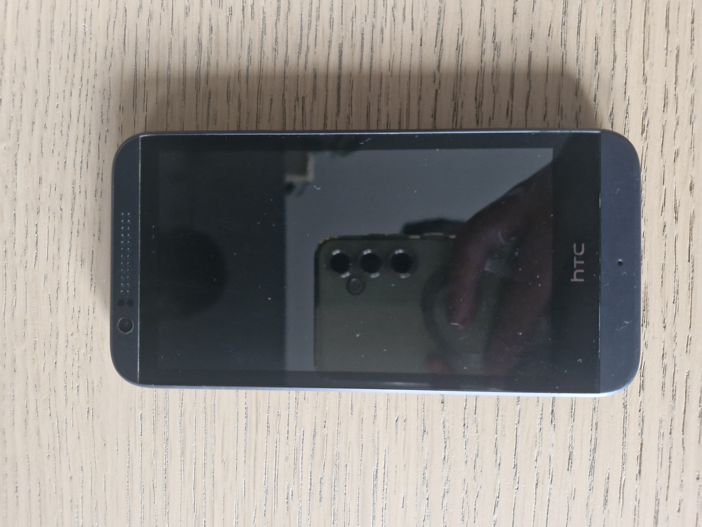
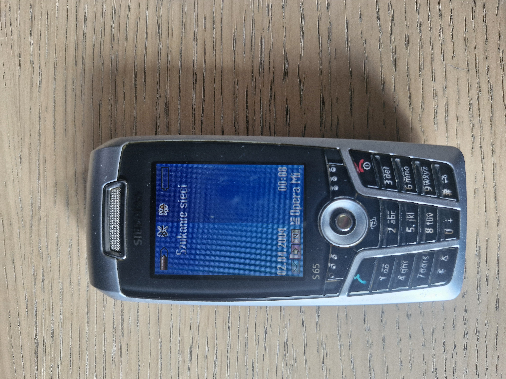

-Procesor to Qualcomm Snapdragon 410 o taktowaniu 1,2GHz
-Pamiêæ RAM to 1GB
-Matryca apartu tylniego to 5 megapixeli, a matryca aparatu z przodu to 0,31 megapixela
-Wyœwietlacz telefonu to ekran S-LCD o przek¹tnej 4,7cala i rozdzielczoœci 480 na 854px
-Telefon obs³uguje LTE cat.4 co pozwala osi¹gn¹æ prêdkoœæ siêgaj¹c¹ do 150/50 Mbps
-Telefon jest wyposa¿ony w 8GB pamiêci wewnêtrznej, ale mo¿na rozszerzyæ t¹ pamiêæ za pomoc¹ karty microSD do 128GB
-Telefon obs³uguje WI-FI 2,4GHz oraz Bluetooth w wersji 4.0
-Z dodatkowych funkcji telefon ma Radio FM odtwarzacz muzyczny i video oraz wymienny alumulator o pojemnoœci 2100mah

-Procesor to Exynos 4412 Quad o taktowaniu 1,4GHz
-Pamiêci RAM jest 2GB
-Matryca aparatu tylniego to 8 megapixali, a matryca aparatu przedniego to 1,9 megapixela
-Wyœwietlacz telefonu to ekran SUPERAMOLED o przek¹tnej 4,8cala i rozdzielczoœci 720 na 1280px
-Telefon obs³uguje LTE cat.3 co pozwala na osi¹gniêcie prêdkoœci 100/50Mbps
-Mój model jest wyposa¿ony w 16GB pamiêci wewnêtrznej któr¹ mo¿na rozszerzyæ do 64GB za pomoc¹ karty microSD
-Telefon obs³uguje WI-FI 2,4/5GHz obs³uguje te¿ Bluetooth 4.0
-Z dodatkowych funkcji telefon ma odtwarzacz muzyczny/video, ma wymienny akululator o pojemnoœci 2100mah i do³o¿yæ ³adowanie indukcyjne za pomoc¹ specjalnej cewki schowanej za klapk¹ od baterii.

-Procesor to Infineon PMB7860 o taktowaniu 104MHz
-Pamiêci RAM jest oko³o 512KB-1MB
-Matryca tylniego aparatu to 1,3 megapixela, telefon nie posiada przedniego aparatu
-Wyœwietlacz telefonu to kolorowy ekran TFT o przek¹tnej ok.2.1cala i rozdzielczoœci 132 na 176px
-Telefon obs³uguje internet przez GPRS klasy 10 co pozwala na osi¹gniêcie prêdkoœci 53.6/26.8kb/s
-Telefon posiada oko³o. 11MB pamiêci wewnêtrznej któr¹ by³o mo¿na rozszrszyæ do³¹czon¹ kart¹ RS-MMC o pojemnœci 32MB (max.poj 512MB)
-Telefon obs³uguje Bluetooth 1.2 i mo¿e przez niego przesy³aæ internet GPRS do komputera.
-Z dodatkowych funkcji telefon posiada wymienny akulumatorek o pojemnoœci 700mah oraz standard JAVA 3D.